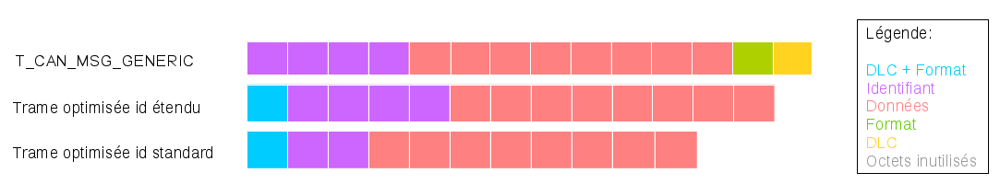

Soutenance de Stage
Pellenc SA
Corentin Raoult - décembre 2015
Sommaire
- Introduction
- Présentation de l'entreprise
- Le groupe Pellenc
- Domaines d'activité
- Laboratoire L2EI
- Présentation du stage
- Contexte
- Problématique
- Tâches effectuées
- Résultat final
- Problèmes rencontrés et solutions apportées
- Points à améliorer
- Conclusion
Introduction
- Durée: 6 mois de juillet à décembre 2015
- Etreprise: Pellenc S.A.
- Domaine: Informatique embarqué
Groupe Pellenc
Création : 1973 Siège : Pertuis (Vaucluse) Employés : 1192 (400 à Pertuis)
Groupe Pellenc
Domaines:
- Vitiliculture
- Matériel de Chais
- Oléiculture
- Outils électroportatifs
Viticulture
Porteur Optimum
Viticulture
Outils selon la saison
Viticulture
Outils Tractés

L2EI
Laboratoire d'études électroniques et informatiques ~ 30 personnes 2 divisions: AGRI et GCT 2 parties: bureau et paillasses
Contexte
- Porteur Optimum utilisant le bus CAN
- Cartes programmables par bus CAN
- Pluiseurs bus CAN (moteur, outil, Porteur)
Accès au bus CAN
Pupitre du Porteur
Accès au bus CAN
USB-to-CAN (IXXAT)
bus CAN (Controller Area Network)
- Créer par Bosch au milieu de années 1980
- Largement utilisé dans industrie automobile
- Peu sensible au bruit
- 2 normes: 2.0A, 2.0B
Cahier des charges
Relier un ordinateur au bus CAN par USB et par Wi-Fi.
Contraintes:
- débit > 1Mbit/s
- Températures industrielles
- Vibrations
- Compatible Windows et GNU/Linux
- Compatible plugins Pellenc
- Compatible protocole Pellenc
- Programmable par bus CAN
- Configurable par les 3 interfaces
Tâches effectuées
- Analyse
- Conception d’un prototype
- Développement du logiciel permettant de communiquer avec le bus CAN
- Tests des programmes
- Documentation
Résultat Final
Architecture Globale

Résultat Final
Architecture de la carte

Résultat Final
Logiciel de configuration de la carte

Tests effectués
Test réception USB
Tests effectués
Test réception Wi-Fi
Tests effectués
Test en boucle USB
Tests effectués
Test en boucle Wi-Fi

Problèmes rencontrés et solutions apportées
- Threads des plugins
- Manque de temps pour concevoir la carte
- Pertes de trames avec le plugin série
- Protocole de la société Pellenc
- Retransmission TCP
- Trames trop longues sur UART
Trames trop longues sur UART
Trames trop longues sur UART
Exemples

Points à améliorer ou à finir
- corriger les bugs
- développer un logiciel sur ordinateur et sur téléphone pour pouvoir faire une télécommande
- concevoir et réaliser une télécommande étanche avec un autre module Wi-Fi
- développer un logiciel permettant d’afficher toutes les trames passant par le bus CAN
- finir de souder la carte et la tester